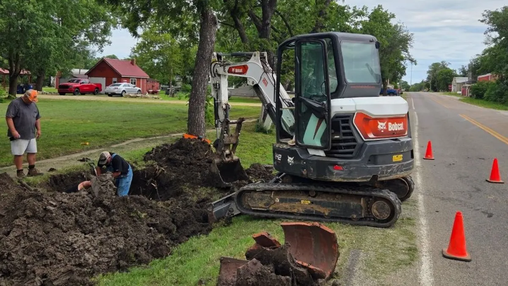

Septic Installation
Full septic system installation including excavation, tank placement, drain field, and inspector coordination.
Learn MoreSite clearing, grading, utility trenching, and excavation for new builds, additions, and rural projects across Central Kansas. Done right the first time.

Central Kansas ground is not the same everywhere. From the heavy clay soils around Salina to the rockier terrain in Lincoln County, excavation work requires local knowledge and the right equipment. Mike's Services LLC has worked this ground across multiple counties and we know how to plan a job before the first bucket of dirt moves.
Request a QuoteExcavation is the process of moving earth to prepare a site for construction, utility installation, drainage work, or foundation placement. Trenching is a specific type of excavation — typically a long, narrow cut used to lay pipe, conduit, or cable underground. Both are fundamental to almost any new construction or property improvement project in rural Kansas.
Whether you are building a new home on raw land, adding a shop or barn, running water or electrical lines to an outbuilding, installing drainage to fix a flooding problem, or preparing a driveway, excavation is where the project starts. Getting the grade right from the beginning prevents water problems, foundation settling, and drainage issues that cost far more to fix after the fact.
Mike's Services LLC handles excavation projects of all sizes across Central Kansas. We work with homeowners planning a new build, farmers expanding their operations, and commercial property owners who need site prep done efficiently and on schedule. Our equipment is sized for rural and residential work — not so large it tears up your property getting to the job, not so small it can not handle the volume your project requires.
We give you a clear scope before we start, communicate throughout the job, and clean up after ourselves. If your project requires coordination with utilities or other contractors, we work around their schedules to keep things moving forward.
Excavation and trenching services from Mike's Services LLC include:
Mike's Services LLC provides excavation and trenching services throughout Central Kansas including Salina, Tescott, Bennington, Minneapolis, Lincoln, Ellsworth, and Abilene. We serve property owners across Saline County, Ottawa County, Lincoln County, Dickinson County, Ellsworth County, and Cloud County. Not sure if we cover your location? Call us and we will let you know.
Common questions from Central Kansas property owners about excavation work.
Yes — Kansas law requires calling 811 at least three business days before any digging begins. This triggers a utility locate request so underground lines can be marked before excavation. We factor this into our project timeline and can help coordinate the process.
Trench depth depends on the purpose and site conditions. Utility trenches for water and sewer lines typically run 3 to 6 feet deep in Kansas to get below the frost line. We assess your specific project requirements and trench to the correct depth for your application.
A simple utility trench on a residential property can be completed in a day. Larger site prep projects for new construction may take several days depending on the acreage, soil conditions, and scope. We give you a realistic timeline in our quote before work begins.
Excavated material is either stockpiled on site for backfill use, spread across the property as directed, or hauled off depending on your preference and project needs. We discuss spoil management with you before the job starts so there are no surprises.
Yes — we work carefully around existing structures, foundations, and trees when required. Close-quarters excavation requires careful equipment operation and planning. We assess the site during quoting and flag any concerns before we start.
Excavation is often just the first step — we handle the full range of site work.
Full septic system installation including excavation, tank placement, drain field, and inspector coordination.
Learn More
Precision grading and compaction for building pads, driveways, and new construction sites.
Learn More
Property clearing, pasture clearing, brush removal, and debris hauling for residential and commercial lots.
Learn More
Small and large demolition, removal, and clean-up with safe disposal and efficient hauling.
Learn More📄 From the Blog: Excavation & Utility Trenching in Central Kansas — What Mike's Crew Handles — read the full guide.
Describe your project and we will get back to you with a clear quote and honest timeline.